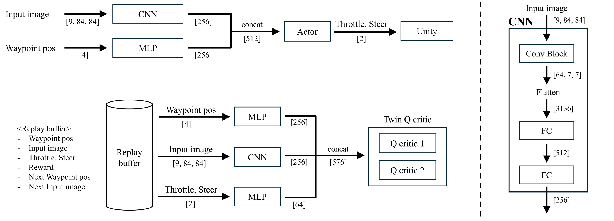
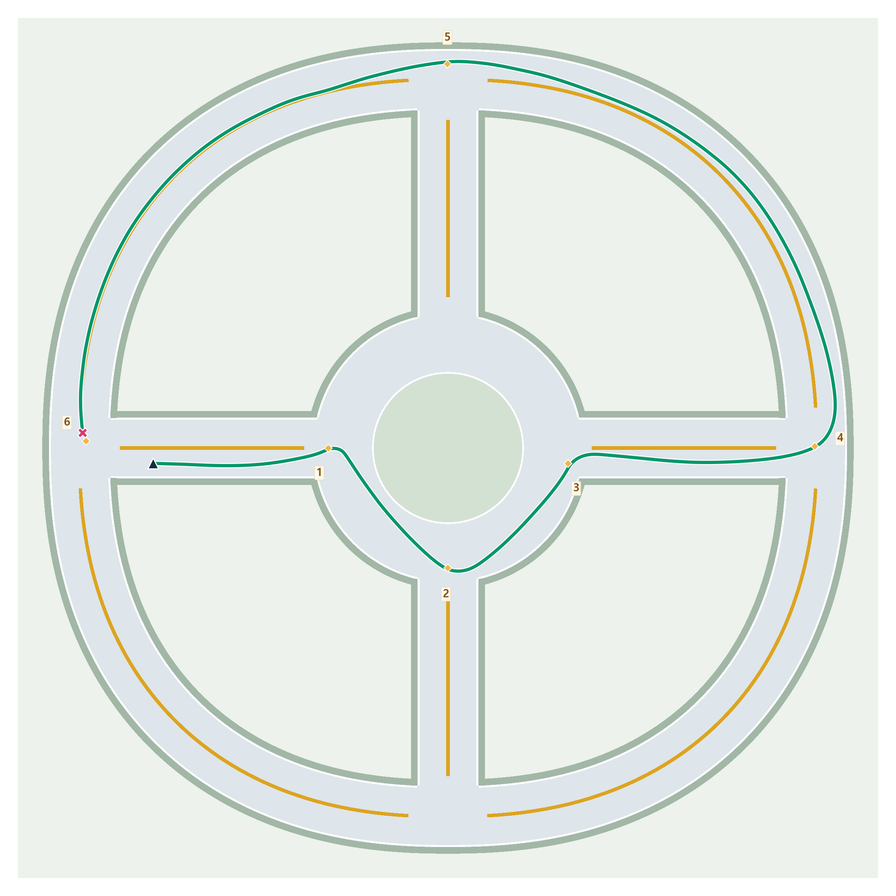

CNN + SAC
CNN과 강화학습을 결합한 자율주행 시스템
두 시점으로 확인하는
하나의 주행.
차량 밖에서 보는 위치와
운전자 시점에서 보는 도로를 함께 확인합니다.
OVERVIEW
목표에 도착하는 것에서,
어떻게 주행하는지까지.
영상과 상태를 결합한 주행 정책을 구현하고,
같은 도로에서 목표 도달과 통행 규칙 준수를 함께 확인했습니다.
목표점 정보는 이동할 방향을 알려주지만, 도로 형태와 차로의 상태를 모두 표현하기에는 한계가 있습니다. 이 작품은 CNN이 추출한 주행 영상의 특징을 경로·차량 상태와 결합하고, 강화학습 알고리즘 SAC로 가속과 조향을 학습합니다.
기본 주행 → 영상 결합 → 주행 보완의 세 단계를 거쳐 정책을 확장했습니다. 같은 평가 보상으로 각 단계의 기록을 분석하고, 최종 모델을 추가 학습 없이 변경된 도로에도 적용했습니다.
METHOD
영상을 보고, 상태를 결합하고,
가속과 조향을 결정합니다.
두 종류의 입력을 하나의 주행 정책으로 연결했습니다. 아래 구조는 최종 모델 기준입니다.
영상에서 특징 추출
RGB 3프레임 → CNN
84 × 84 영상 세 프레임을 활용해 도로의 시각적 특징을 추출합니다.
수치 상태와 결합
Nav 4차원 → MLP
경로·차량 상태를 처리한 특징과 영상 특징을 하나로 결합합니다.
차량 제어
Actor → Unity 차량
SAC로 학습한 정책이 가속과 조향 두 제어값을 출력합니다.
시스템 상세 구조

SIDE-BY-SIDE
같은 출발 조건,
달라진 주행 방식.
동일한 ENV 도로·차량·목표점 8개에서 세 모델을 평가했습니다. 세 영상에 같은 2배속을 적용했으며, 먼저 도착한 경우 마지막 화면을 유지합니다.
도착 여부와 규칙 준수를 함께 비교했습니다.
영상 재생 시간이 아닌, 원본 주행 기록의 수치입니다.
| 평가 항목 | A · Phase 1 | B · Phase 2a | C · Phase 3 |
|---|---|---|---|
| 영상 입력 | 없음 | RGB 1프레임 | RGB 3프레임 |
| 목표점 도달 | 8/8 | 8/8 | 8/8 |
| 주행 시간 | 42.20초 | 57.66초 | 46.64초 |
| 누적 보상 | −227.13 | −761.79 | +840.28 |
| 우측통행 위반 감점 | −1,089 | −1,615 | 0 |
최종 기록에서는 목표점 8개에 도달했고,
우측통행 위반 감점이 0점이었습니다.차선 중심 이탈·시간 감점은 남습니다. 공통 평가 보상으로 비교한 각 조건의 첫 기록이며, 단계별 원래 학습 점수와 구분합니다.
CHANGED ROAD / ENV2
같은 정책을,
새로운 도로에.
최종 Actor를 추가 학습 없이 곡선·회전교차로가 포함된 도로에 적용했습니다. 목표점 여섯 개에 도달했고, 벽 접촉은 없었습니다.
지도·출발점·경로가 달라 ENV와 총점으로 우열을 비교하지 않습니다. 오른쪽 이미지는 실제 기록 궤적입니다.

SCOPE & NEXT STEPS
구현을 확인하고,
검증의 범위를 넓혀갑니다.
이번 결과는 신호등·장애물이 없는 Unity 시뮬레이션에서의 사례 비교입니다. 입력·보상 설계·학습량이 함께 달라졌으므로, 관찰된 차이를 CNN 단독의 효과로 해석하지 않습니다.
다음 단계는 입력과 보상의 기여도를 분리하고, 여러 도로와 Seed에서 반복 평가하여 주행 정책의 적용 범위를 확인하는 것입니다.